| 日付 | 2009年12月6日（日） |
|---|---|
| 山域 | 八ヶ岳 |
| メンバー | 単独 |
| 山行形態 | 日帰り |
| アクセス | 電車 |
| ルート (Map) | 小淵沢駅→観音平→編笠山→富士見高原スキー場→信濃境駅 |
冬になると関東近郊は晴れの日が多くなる。
本日も西高東低の気圧配置で快晴予報だ。
そろそろ八ヶ岳も真白に染まる季節で、
冬山の展望を求めて編笠山に行くことにする。
8:32 小淵沢駅到着。標高885m。
八ヶ岳は家から遠いが、駅から直接登ることができるので便利だ。

甲斐駒ヶ岳が一際大きく見える。
登りたい山の一つだが、この季節に登るのは少々きつい。
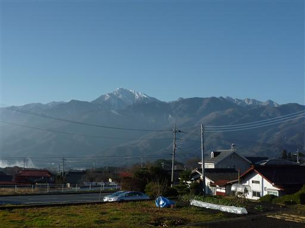
南アルプスを背にして八ヶ岳を目指す。
目の前には優美な姿の八ヶ岳が横たわっている。
左手前にある大きなピークが今回目指す編笠山だ。
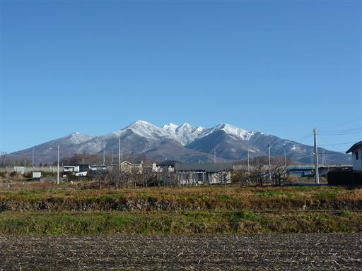
駅から登れるとは言え、八ヶ岳へのアプローチは長い。
幸い車が通ることの無い静かな道があるので、その道を歩いていく。
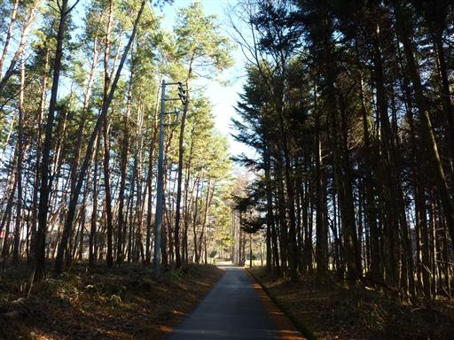
巨大なゲートが現れる。ここから先は冬季通行止めだ。
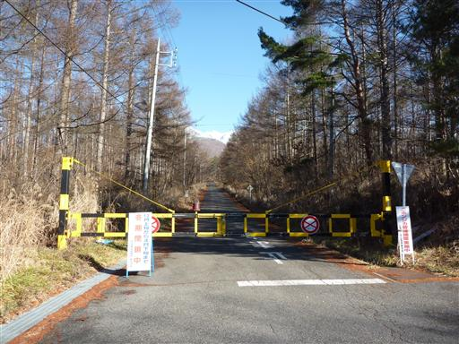
八ヶ岳の裾野は大きい。山の中なのか、平地なのかの判別は付かないが、
少しずつ高度は上がっていく。背後には南アルプスの山々が見事に連なっている。
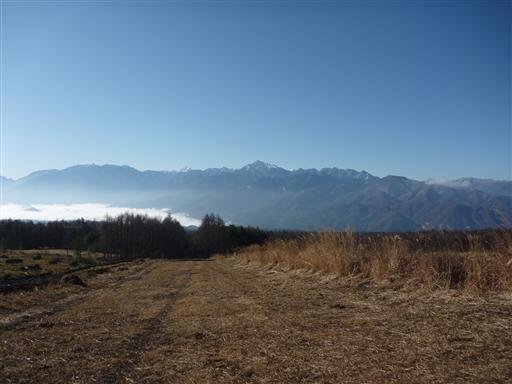
八ヶ岳はだいぶ近くなってきた。
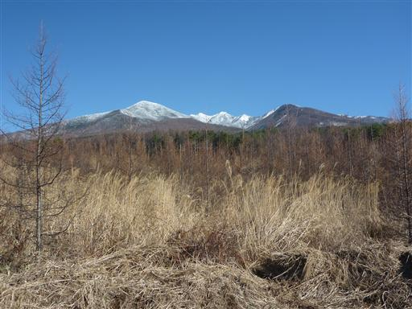
カラマツ林が広がる見事な道。
防火帯なのか、幅の広い道が一直線に続いている。
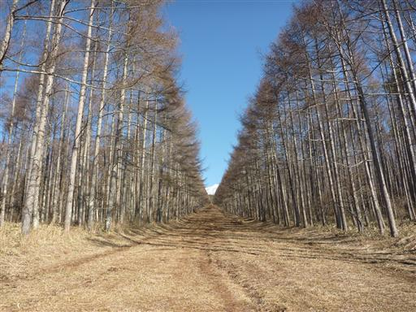
カラマツ林を過ぎると、ようやく登山道らしくなってくる。
この辺りは岩石園と呼ばれていて、巨石が多数転がっている。
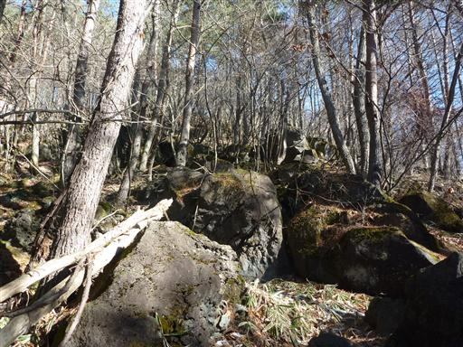
岩に開いた穴の入口が鉄網でガードされている。
中に貴重な光苔が生息しているらしい。
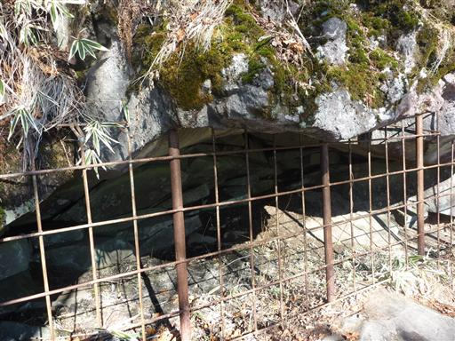
観音平に到着。ここまで登ると雪が積もっている。
なかなか景色のすばらしいところだ。
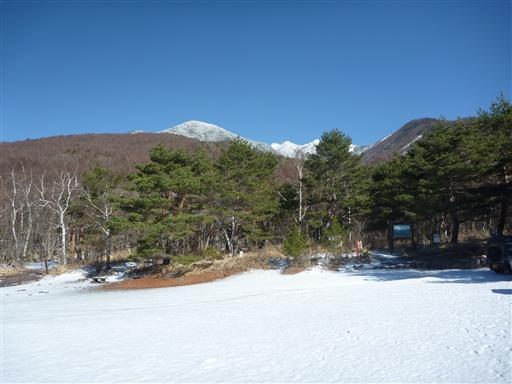
車はここまで入ることができる。マイカー登山は楽でいい。
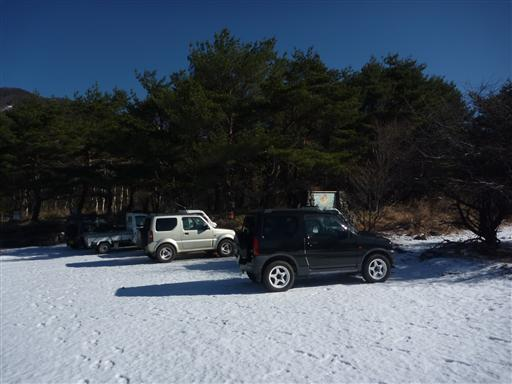
わずかに雪の積もる道を軽快に登っていく。
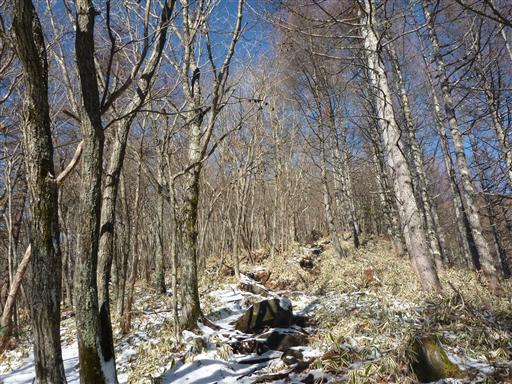
雲海と呼ばれるところに到着する。
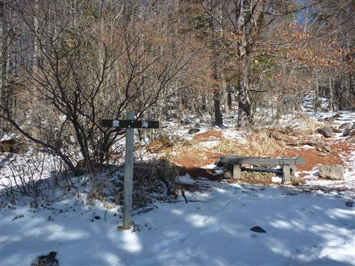
ここからは富士の姿がよく見える。
甲府盆地は雲の下で、本当に雲海が広がっている。
雲海がよく見えるところなのでそう名づけられたのだろう。
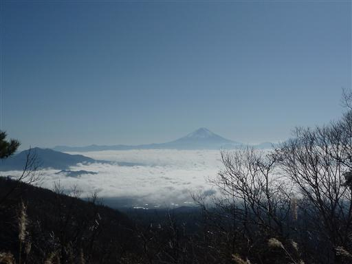
標高を上げると付近は広葉樹林から針葉樹林帯になる。
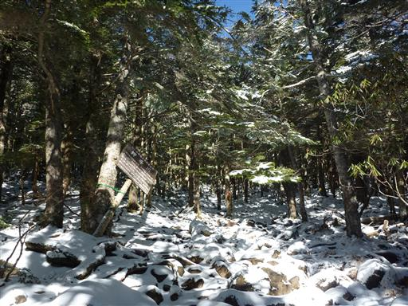
この辺りは編笠山の原生林として「やまなしの森林100選」に選ばれている。
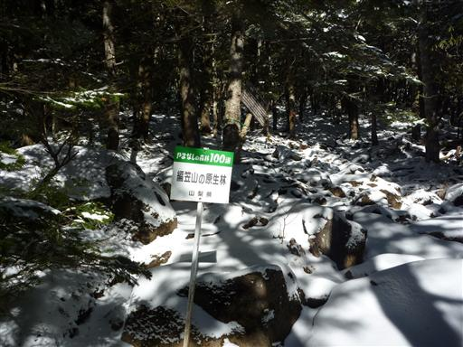
少しずつ雪が深くなってくるが、スパッツを付けるほどでもない。
八ヶ岳は春夏秋冬、人が多いというイメージがあったが、
すれ違う人はあまり多くなく、静かな登山道だ。
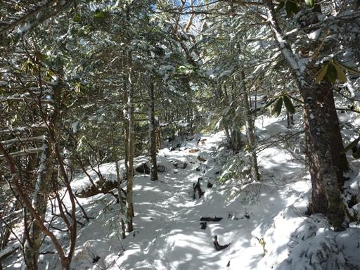
木にはツララがたくさんぶら下がっている。
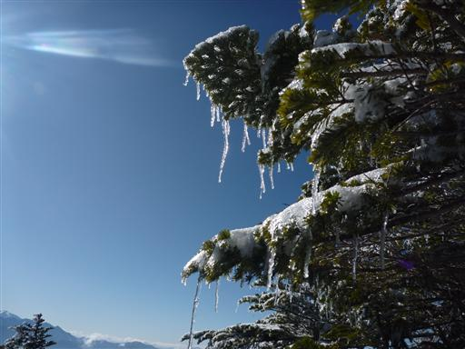
空を見上げると快晴の青空が広がっている。雪で白く染まった木々が眩しい。
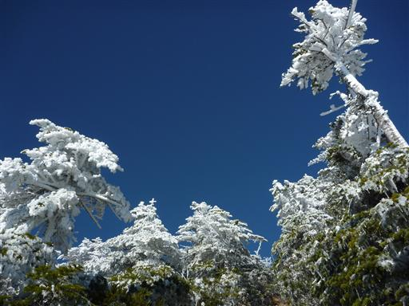
奥秩父の山々が遠くに見えている。山頂ではすばらしい展望が期待できそうだ。
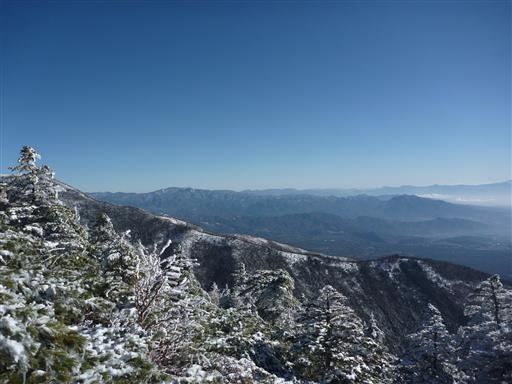
樹林帯を抜けると一気に展望が広がる。風は相当強そうで、先の方では雪煙が舞っている。
おそらく山頂はもうすぐなので、ここで防寒着を着て、スパッツを付ける。
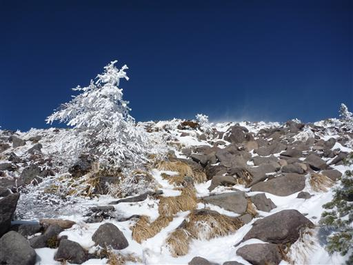
そこから強風の中を登るのを覚悟していたら、1分ほどで山頂に到着してしまった。
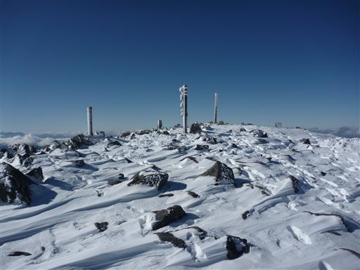
12:40 編笠山山頂到着。標高2524m。
山頂からは八ヶ岳の中心部の山々が間近に迫っている。すばらしい展望だ。

南の方角には富士山が完璧に見えている。
そこそこ距離は離れているが、やはりこの山はよく目立つ。
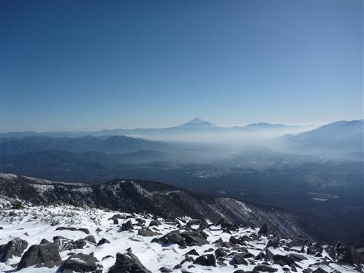
釜無川をはさんだ向かい側には南アルプスが見えている。
鳳凰山、北岳、甲斐駒ヶ岳がよく見える。
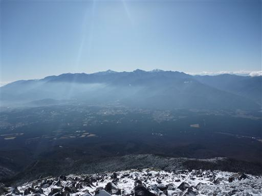
その右手に見えるのは中央アルプス。こちらは少し雲がかかっている。
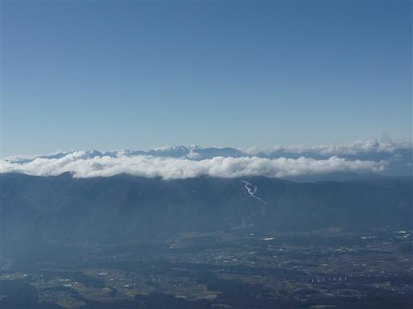
山頂付近は強風によってシュカブラができている。
ここだけは雪が深くて、吹き溜まりになっている所だと膝上くらいまで積もっている。
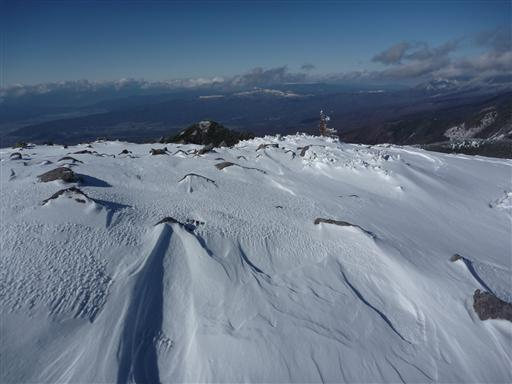
余裕があれば中央に見える権現岳まで登りたかったが、時間的に無理そうだ。
風を避けられるところに移動して昼食をとる。山頂に人影は無い。
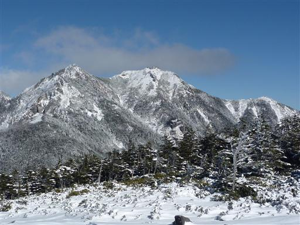
山頂から同じ道を引き返すのも能が無いので、別ルートで下る。
このルートは夏でも静かな登山道ということで、この時期だと歩く人はいないだろう。
さて、山頂は岩がごろごろしていて下り口がさっぱり分からない。
とりあえず方向を合わせて岩の斜面を適当に下っていく。
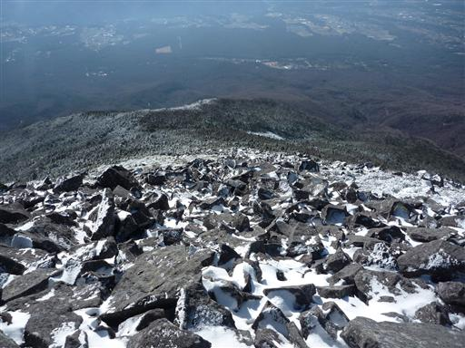
「もうそこだ！」の標識を見つける。
下のほうをよくよく見ると、岩の上に黄色ペンキの矢印が点在している。
これで、道に迷う心配も無くなり一安心だ。
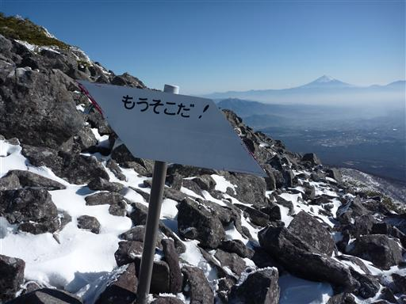
巨岩転がる斜面をどんどん下っていく。相変わらず青空が美しい。
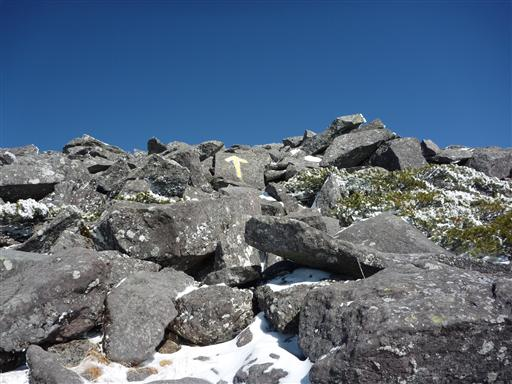
今度は「頑張って！」の標識。
人通りが少ない道の割には、標識がそろっている。
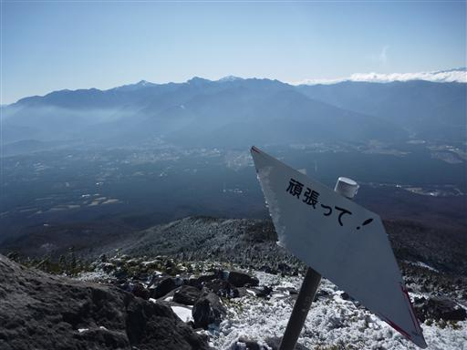
長い岩場の下りが終わってようやく樹林帯の中に入る。
寒い寒い強風から解放されたので、ここでカッパを脱いで小休止。
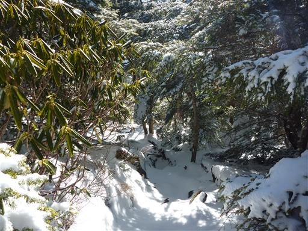
さすがにこのルートは歩く人がいないようで、雪の上に足跡は全く見当たらない。
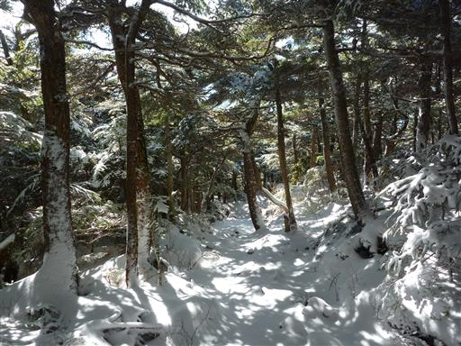
白久保岩小屋と呼ばれる場所に到着。岩に小さな穴が開いている。
ここまで下ると雪は完全に消えているのでスパッツも外す。
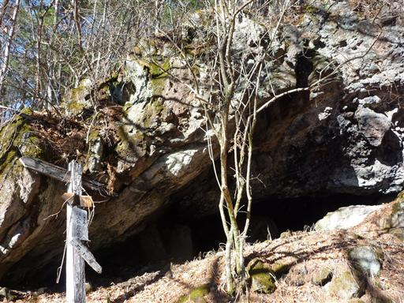
もう八ヶ岳の裾野の部分なので傾斜はあまり無い。遊歩道のような道を歩いていく。

下山。ここで時計を見ると、時間は中途半端。頑張れば予定より1本早い電車に乗れる。
それを逃すと次の電車は1時間半後なので結構差がある。
仕方が無いので車道を走って時間を稼ぐ。ザックを背負っていると結構辛い…
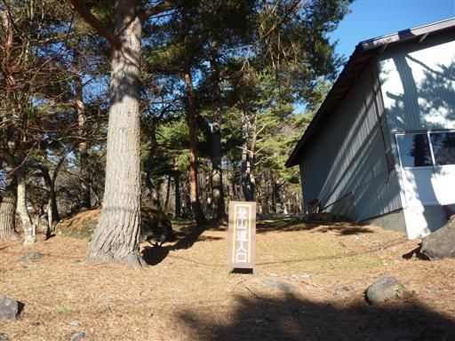
駅までの距離は予想以上に長く、途中でかなり後悔したが、
これで乗り遅れるとますます後悔するので走り続ける。
15:35 信濃境駅到着。標高920m。無事5分前に到着できた。
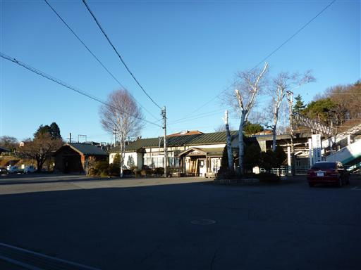